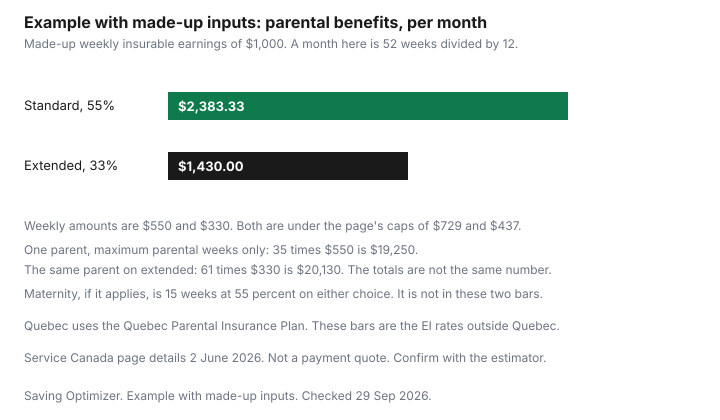

Kids · Canada
EI Maternity and Parental Benefits: Standard vs Extended and How to Plan the Money
Extended leave spreads a lower weekly rate over more weeks. The month you live on is the number that has to pay the rent. Service Canada's maternity and parental page, page details 2 June 2026, is the source for every rate and week count below. Quebec does not use these EI benefits. This is not advice to pick one option, and it is not legal or HR advice. Confirm your own week with Service Canada's estimator before you tell your employer a date.
Key takeaways
- Maternity is up to 15 weeks at 55 percent, up to $729 a week. It cannot be shared.
- Standard parental is 55 percent, up to $729. Up to 40 weeks can be shared. One parent cannot receive more than 35.
- Extended parental is 33 percent, up to $437. Up to 69 weeks can be shared. One parent cannot receive more than 61.
- You cannot switch after a week of parental benefits has been paid to you, or to the other parent.
- Example with made-up inputs: $1,000 of weekly insurable earnings becomes $550 a week on standard and $330 a week on extended. A month of 52/12 weeks is $2,383.33 versus $1,430. The one-parent totals are not equal.
Maternity vs parental benefits and who can claim
Employment Insurance maternity and parental benefits, outside Quebec, are for people away from work because they are pregnant or have recently given birth, and for parents away from work to care for a newborn or a newly adopted child. Maternity benefits are only for the person who is pregnant or has recently given birth.
They cannot be shared. That person may also be entitled to parental benefits. You can apply for both at once.
The page's opening line says you could receive 55 percent of your earnings, up to a maximum of $729 a week. The table under that line is more precise. Maternity and standard parental use 55 percent and a weekly maximum of $729. Extended parental uses 33 percent and a weekly maximum of $437. The $729 sentence is not the extended rate.
Parental weeks do not have to be consecutive. They do have to fall inside a window that starts the week of the child's birth, or the week the child is placed with you for adoption. Standard parental weeks must be taken within 52 weeks, which the page also calls 12 months. Extended weeks must be taken within 78 weeks, which the page calls 18 months.
Standard vs extended parental: same total, spread thinner
The choice changes both the number of weeks and the weekly amount. People often describe extended leave as the same money stretched out.
Multiply before you believe that. On the rates on the page, 35 weeks at 55 percent is not the same product as 61 weeks at 33 percent. Thirty-five times 0.55 is 19.25. Sixty-one times 0.33 is 20.13. The extended one-parent maximum is a larger multiple of a week's earnings, paid more slowly. The shared ceilings are 40 times 0.55, which is 22, and 69 times 0.33, which is 22.77. Close is not the same number. Use your own week, then stop at the weekly maximum if 55 percent or 33 percent would go past $729 or $437.
| Benefit | Weeks | Rate | Weekly maximum |
|---|---|---|---|
| Maternity, person giving birth | Up to 15. Cannot be shared. | 55% | Up to $729 |
| Standard parental | Up to 40 shared. One parent cannot receive more than 35. | 55% | Up to $729 |
| Extended parental | Up to 69 shared. One parent cannot receive more than 61. | 33% | Up to $437 |
| Quebec | QPIP, not this table. See rqap.gouv.qc.ca. | ||
The page does not print a maximum insurable earnings figure next to these weekly caps. This guide does not invent one. If your 55 percent would exceed $729, the cap is $729. If your 33 percent would exceed $437, the cap is $437. Below the cap, the percentage is the calculation.
Example with made-up inputs. Average weekly insurable earnings are $1,000. That is under both caps: 55 percent is $550, and 33 percent is $330. A month in this example means 52 weeks divided by 12. Standard is $550 times 52, divided by 12, which is $2,383.333…, shown as $2,383.33. Extended is $330 times 52, divided by 12, which is $1,430 exactly. The month on extended is $953.33 less in this sketch. That is the drop to plan for, not a rounding error.
One parent taking the maximum parental weeks, with no sharing of the extra weeks: 35 times $550 is $19,250 on standard. Sixty-one times $330 is $20,130 on extended. If that same person also takes 15 maternity weeks, add 15 times $550, which is $8,250, on either choice. The birth-parent total is then $27,500 on standard (50 weeks at $550) and $28,380 on extended ($8,250 plus $20,130). The extended total is higher in this arithmetic, and the month is lower. Do not pick extended because you think the lifetime total is identical, and do not pick it because this one example's total is higher. Your earnings, the cap, and how many weeks you actually take will move both numbers. Service Canada's estimator is the payment.
| Standard parental | Extended parental | |
|---|---|---|
| Weekly benefit | $550 | $330 |
| Month, 52/12 | $2,383.33 | $1,430.00 |
| One parent, max parental weeks | 35 × $550 = $19,250 | 61 × $330 = $20,130 |
| Add 15 maternity weeks at 55% | $8,250, total $27,500 | $8,250, total $28,380 |

Sharing parental weeks between parents
If you share, each parent chooses the same option and files their own application. You can take weeks at the same time or one after another. You cannot change from standard to extended, or the other way, once a week of parental benefits has been paid to you or to the other parent. Decide before the first parental payment.
The page's own examples: Natalie takes 15 weeks of maternity and 35 weeks of standard parental, 50 weeks for her, and her partner can apply for up to 5 weeks of standard parental. If she takes fewer parental weeks, the partner can apply for more, still inside the 40-week shared ceiling and the 35-week cap on each parent. Kelsey takes 15 weeks of maternity and 61 weeks of extended parental, 76 weeks for her, and her partner can apply for up to 8 weeks of extended parental. The same idea applies: unused weeks can move, inside the 69-week shared ceiling and the 61-week cap on each parent.
Two parents at home in the same week means two weekly payments and, usually, no one at work. That can be what you want for a month, and it spends the shared pool faster. Write the weeks on a calendar before you both apply for the same dates.
Employer top-ups and how they interact
Some employers pay a top-up during maternity or parental leave. The top-up is the employer's plan, not a figure on the Service Canada overview page.
This guide does not state a typical percentage, and it does not describe when a top-up counts as earnings that reduce EI. Read the plan document for the percentage, the number of weeks, and whether standard and extended are treated the same. Then check with Service Canada whether that payment changes the EI week. Do not add the top-up on top of a full EI week in your budget until both answers are in writing.
A workplace health plan, a health spending account, and a second parent's plan are a different stack. The two-plan guide and the HSA guide are where those benefits sit. Leave pay and a dental plan are not the same envelope. If the leave will run past a benefit year, ask the employer what happens to the plan while you are not on the payroll. That answer is the contract, not this page.
Quebec's QPIP is different
Service Canada says the province of Quebec provides maternity, paternity, parental, and adoption benefits to its residents, and it points to the Québec Parental Insurance Plan. If you are a Quebec resident, do not budget with $729 or 35 weeks.
Open the QPIP site. The public overview describes benefits for pregnancy or birth, for adoption, and for surrogacy, and it offers a simulator. It does not, on that overview, print the weekly rate or the week counts this article would need. Use the simulator and the benefit page for the plan you are actually choosing. Paternity weeks are part of QPIP's design. They are not a row in the EI table above.
A leave-budget worksheet
Put the EI or QPIP month on one line and the bills that do not shrink on the lines under it. Rent or the mortgage, groceries, insurance, debt payments, and childcare for an older child do not become smaller because the leave is longer.
The zero-based budget is the method. A sinking fund is how you hold the property-tax instalment that lands in the middle of the leave. The first-year cost of the baby, as a shopping list rather than a benefit rate, is on the first-year guide.
Worksheet, blank on purpose. Write your numbers, not the made-up $1,000 week, unless that week really is yours.
- Weekly insurable earnings you will use, then 55 percent and 33 percent, then the $729 and $437 caps if they bind.
- Weeks of maternity, if any, and weeks of parental, and which parent takes which weeks.
- Employer top-up only after you have read the plan and checked Service Canada.
- The month: benefit plus top-up, minus rent, groceries, insurance, debt, and the older child's care.
- The last month of leave, when the benefit stops and pay has not restarted. That gap is a date, not a mood.
Sources
- Service Canada, EI maternity and parental benefits, page details 2 June 2026, as of 29 Sep 2026. Maternity up to 15 weeks, 55 percent, up to $729, not shareable. Standard parental up to 40 weeks shared, one parent not more than 35, 55 percent, up to $729. Extended up to 69 weeks shared, one parent not more than 61, 33 percent, up to $437. Windows of 52 and 78 weeks. No switching after a week is paid. Quebec uses QPIP. Natalie and Kelsey examples as on the page.
- Québec Parental Insurance Plan overview, as of 29 Sep 2026. Benefit types and a simulator are on the site. No weekly rate or week count is quoted from that overview.
- The $1,000 week, and every dollar built from it, is an example with made-up inputs. The 55 percent, 33 percent, $729, and $437 figures are the only official rates applied.
Frequently asked questions
What is the difference between standard and extended parental benefits?
Standard parental benefits are 55 percent of earnings, up to $729 a week, for up to 40 weeks that can be shared, with one parent limited to 35 weeks. Extended parental benefits are 33 percent, up to $437 a week, for up to 69 weeks that can be shared, with one parent limited to 61 weeks. You cannot switch after a week has been paid. Check Service Canada's page before you choose, and this is not advice about which option to take.
Does extended parental leave pay more in total?
On a made-up week of $1,000 of insurable earnings, 35 weeks at 55 percent is $19,250 and 61 weeks at 33 percent is $20,130. Those are the one-parent maximums, and they are not the same number. Maternity weeks, if they apply, are 15 weeks at 55 percent on either choice. Multiply your own weekly amount rather than assuming the pot is identical.
Can both parents share parental benefits?
Yes. Each parent applies, each must choose the same option, and weeks can be taken at the same time or one after another. One parent cannot take more than 35 weeks of standard benefits or 61 weeks of extended benefits, and the shared ceilings are 40 and 69 weeks. Maternity benefits cannot be shared: they belong to the person who is pregnant or has recently given birth.
How do employer top-ups work with EI?
A top-up is pay from the employer during the leave, and whether it changes the EI payment depends on the plan and on Service Canada's rules for earnings. This page does not describe a supplemental plan or a percentage. Read the employer's plan and check with Service Canada before you count the top-up as money that stacks on the full EI week. It is not legal or HR advice.
Is Quebec different?
Yes. Service Canada says Quebec provides maternity, paternity, parental, and adoption benefits through the Quebec Parental Insurance Plan, and the EI rates on this page are not QPIP rates. The QPIP site lists the benefit types and a simulator, so check it for the amount and the number of weeks. The $729 figure is the EI maximum, so check QPIP before you use a number in Quebec.
Researched and drafted with AI assistance and fact-checked against official Canadian sources. How we create content.